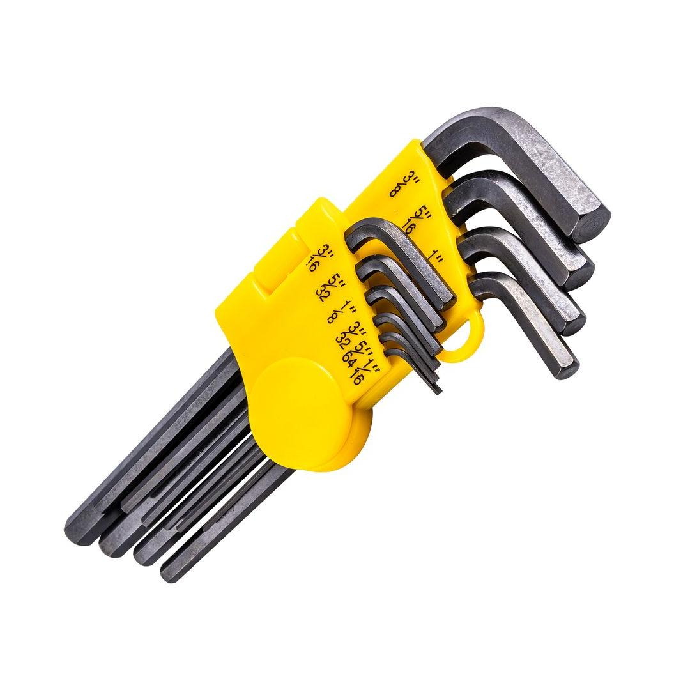
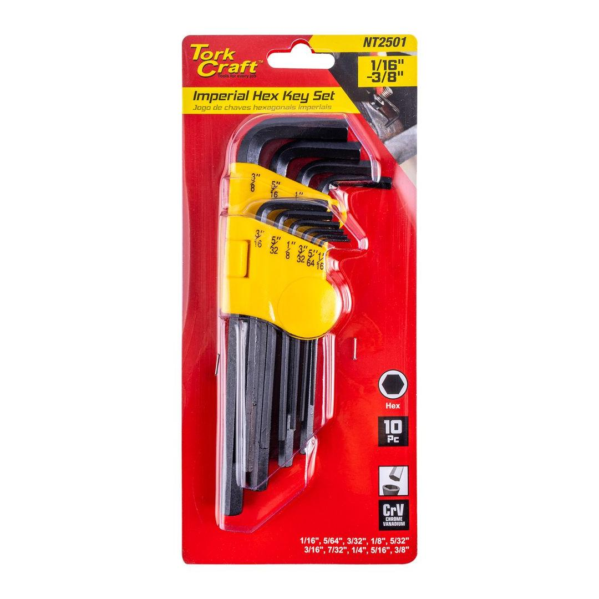
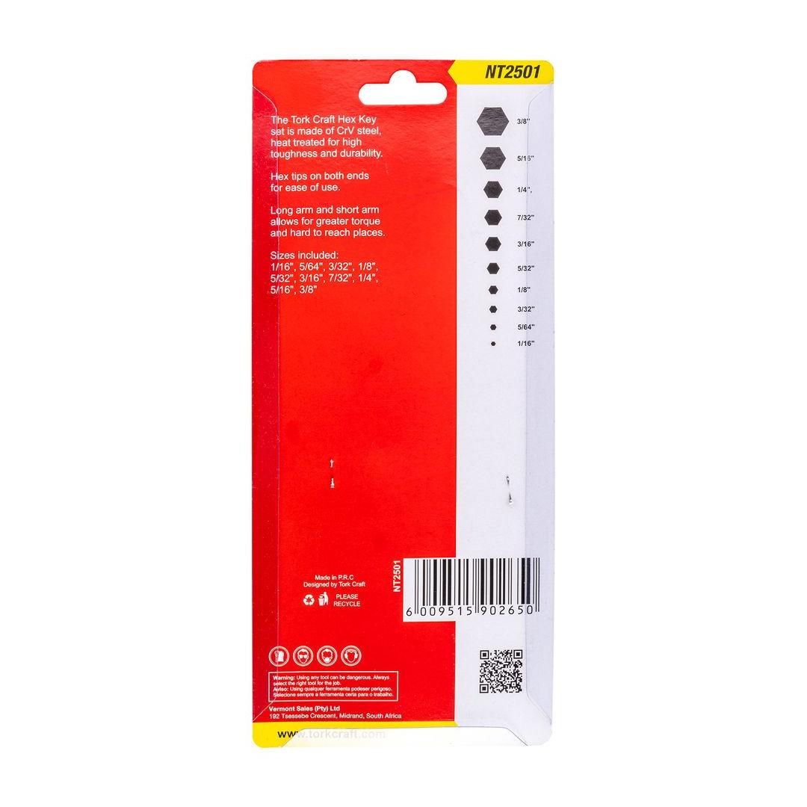

NT2501



The 10PC Hex L-Wrench Set Imperial is a set of ten L-shaped tools designed to tighten or loosen screws and bolts with hexagonal heads. These tools are commonly referred to as Allen keys or hex keys. Having this set on hand, you&ll be well-equipped to tackle a variety of tasks, making it a valuable addition to any toolbox.
Application: